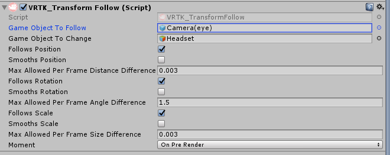

VRTK Unity Plugin Programming Guide¶
Step to use Hypereal Unity Plugin and VRTK implementation¶
- Download the VRTK from github (We were based on the commit af7ccb638fef06236c07233f367327473728795a on the branch master in the development and testing).
- Download the Hypereal Unity Plugin and Hypereal VRTK from hypereal.
- Import the HyperealVR.unitypackage into the project.
- Add the folder "HyperealVR" into the folder "SDK" in the VRTK.
- Drag the HyperealCameraRig prefab from Hypereal VRTK into the scene.
- Select the GameObject with the VRTK_SDKManager script attached to it.
- Select Hypereal VR for each of SDK Choices.
- Click the Auto Populate Linked Objects buttn to find the relevant Linked Objects.
Key mapping¶
- We have only one button on the pad of controller. We could not map all VRTK buttons like button-one, button-two and button-menu. So the button on the pad of right controller is mapped to VRTK button-menu while the button on the pad of left controller is mapped to button-two of VRTK. VRTK button-one has not been mapped to any button of the controller.
Examples Instructions¶
- Example 027: Need to drag the TeleportTable from [VRTK] to HyperealCameraRig, if not the TeleportTable will not follow the headset move.

- Example 031: Need to add Camera(eye) to the "Game Object To Follow" in the [VRTK]/Headset. 
- Example 034: Need to add Camera(eye) to the "Event Camera" in ExampleObjects/Canvas, ExampleObjects/WorldKeyboard, ExampleObjects/DragDropCanvas.

- Example 029 030: We do not have the more detailed controller models right now. So the tips or the touchpad menu points to the whole controller.